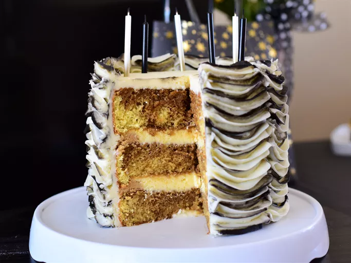

Lasagna

Description
This tiramisu cake tastes fancy without all the work. This cake is
wonderful for a get-together or special occasion at home. Using a boxed
cake mix as a base is a real time-saver!
Ingredients
- 1 (15.25 ounce) package moist white cake mix
- 1 cup water
- 3 large egg whites
Steps
-
Make the cake batter and pour ⅔ of the batter into two prepared cake
pans.
-
Stir instant coffee into the remaining batter and pour it into the
remaining pan.
- Bake the cake layers and let them cool.